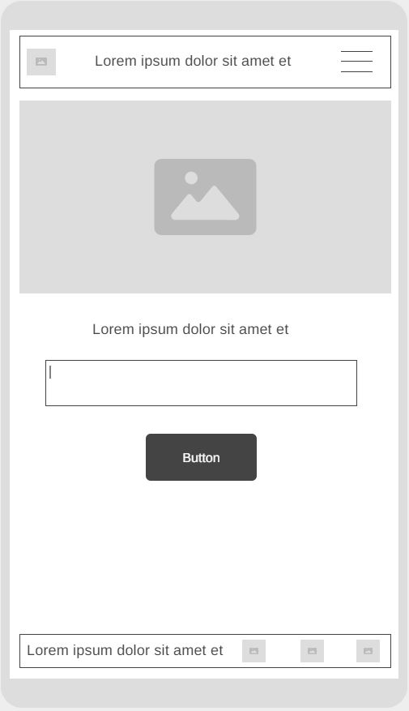
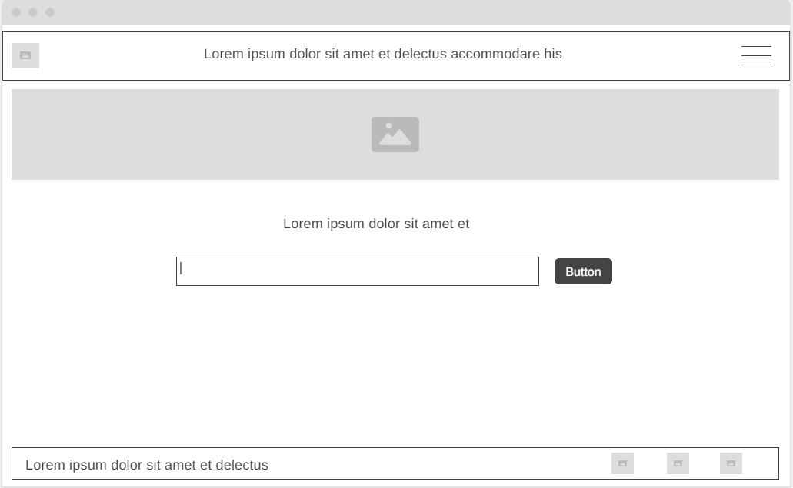

Name:Local Event Finder
A place where you can find local events just for you. Filter so you can find what events will interest you.
Optional Domain Availability: local-events.com
User-friendly website to find desired events in a selected city. A website for anyone to search for events in a city the user inputs. User will be able to filter results for desired events. Weather for inputed city will also display.
Here are two questions that might be asked by site visitors representing the target audience:
Colors selected for the website:
Fonts selected for the website:
Wireframe sketches for both mobile and desktop views of the home page:
 